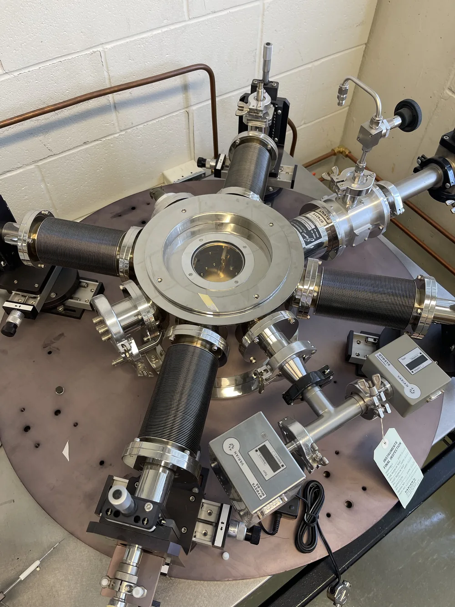
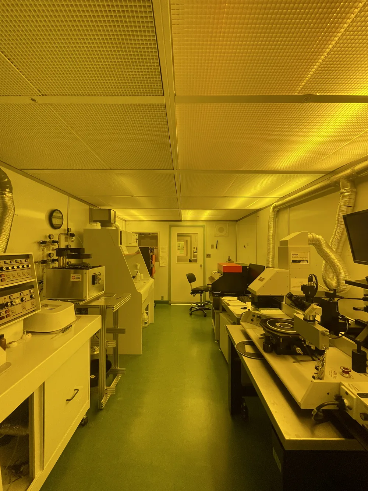
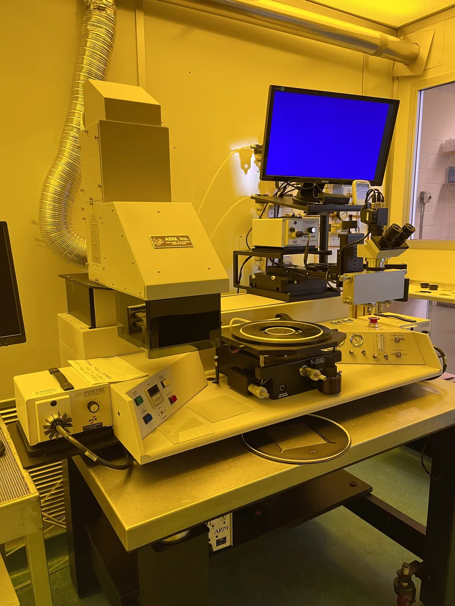
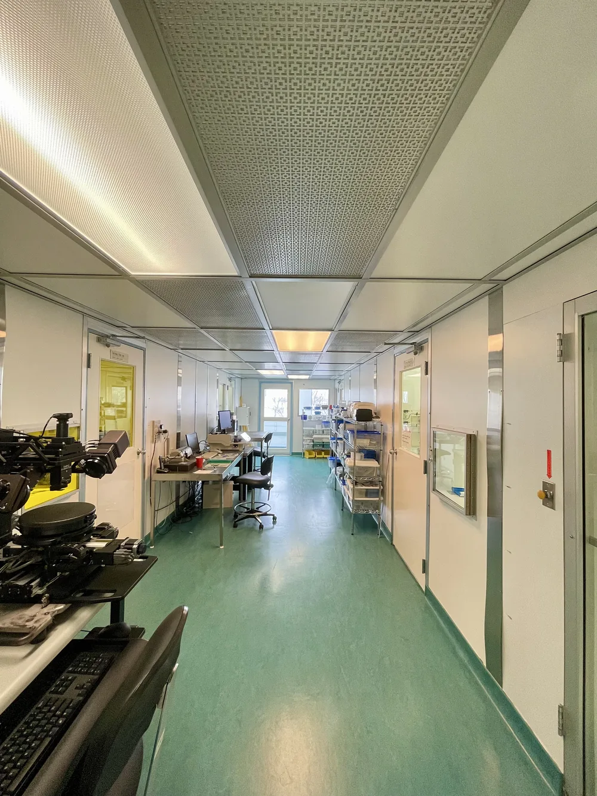
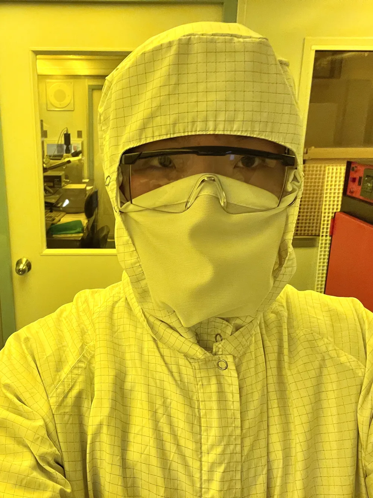

Research · Two threads, two institutions
Sensor fabrication, and silicon reliability.
Cleanroom sensor fabrication at the University of Manitoba, and delay-fault test research on a 12 nm RISC-V core at the University of Waterloo.
Flexible & MEMS sensor fabrication
01 / NANO-SYSTEMS LAB · MANITOBAFlexible and MEMS sensors, run step by step in a Class 10 cleanroom and characterized with SEM, profilometry and ellipsometry.
| Facility | Nano-Systems Fabrication Laboratory, University of Manitoba |
|---|---|
| Cleanroom class | Class 10 |
| Devices | Flexible sensors, MEMS |
| Characterization | SEM, profilometry, ellipsometry |
In the cleanroom
01B / LAB FLOORClass 10 facility, University of Manitoba. Lithography bays run under yellow light to protect the photoresist.






Delay-fault detection on a 12-nm RISC-V core
02 / CMOS DESIGN & RELIABILITY · WATERLOOWith Prof. Manoj Sachdev’s CMOS Design and Reliability Group. A flip-flop with adjustable D-Q delay: the same test vectors run at nominal and extended delay, and a transition fault shows up as a different captured value. No shadow register or comparator needed.
| Group | CMOS Design and Reliability Group, University of Waterloo |
|---|---|
| Supervisor | Prof. Manoj Sachdev |
| Process node | 12 nm FinFET |
| Target | RV32IM RISC-V core |
| Technique | Variable D-Q delay flip-flop, transition-fault testing |
Only DLY_SEL changes between the two runs.
Razor and the pre-sampling aging sensor add a storage element and comparator at each capture site; the variable-delay flip-flop adds one cell on the launch side.
Razor — Ernst et al., “Razor: Circuit-Level Correction of Timing Errors for Low-Power Operation,” IEEE Micro, Nov–Dec 2004. Pre-sampling aging sensor — Agarwal et al., “Optimized Circuit Failure Prediction for Aging: Practicality and Promise.”
Results
02A / EVALUATIONImplemented on an RV32IM core at 1 GHz in 12 nm FinFET, applied to the most critical paths by slack and compared with established schemes under identical conditions. Every configuration met timing with zero TNS, with lower area and power overhead than the alternatives.
Numbers are held until the paper is published.
| Core | Open-source RV32IM RISC-V |
|---|---|
| Process / clock | 12 nm FinFET, 1 GHz target |
| Coverage tested | Most timing-critical paths, several levels up to 100% |
| Timing closure | 1 GHz, 0 TNS, all configurations |
| Status | Results pending publication |